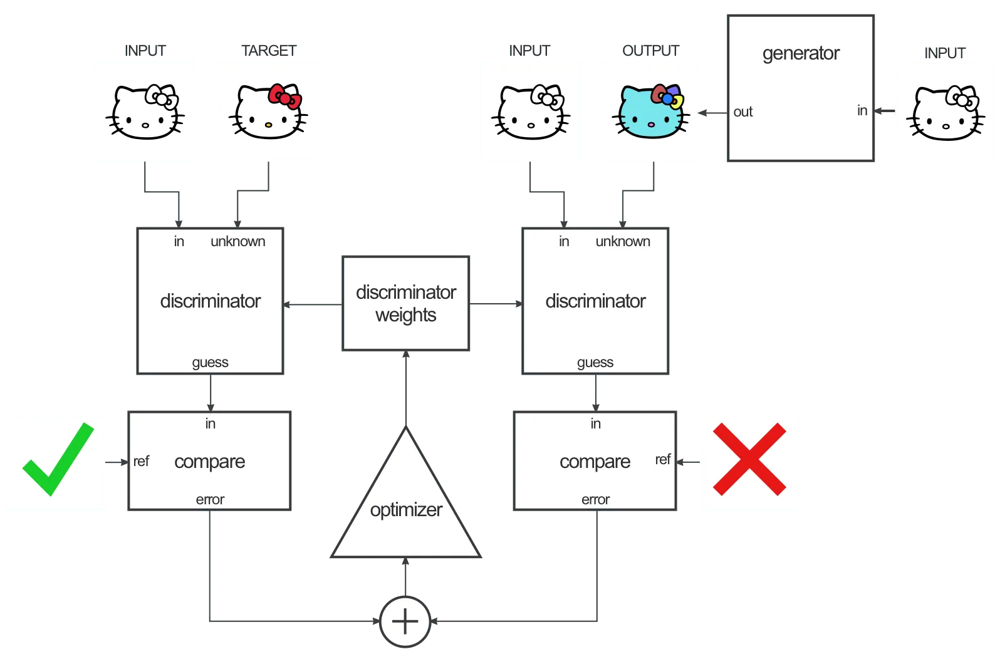

Deep learning domain translation
between mock observations and hydrodynamical simulations
SKA research at
Zurich University of Applied Sciences (ZHAW)
Centre for Artificial Intelligence (CAI)
Institute for Business Information Technology
University of Geneva
08/09/2023
 Philipp Denzel , Mariia Drozdova, Vitaliy Kinakh,
Philipp Denzel , Mariia Drozdova, Vitaliy Kinakh,
Slava Voloshynovskiy, Frank-Peter Schilling, Elena Gavagnin
SKA research at
Zurich University of Applied Sciences (ZHAW)
Centre for Artificial Intelligence (CAI)
Institute for Business Information Technology
University of Geneva
Institute for Business Information Technology
University of Geneva
08/09/2023
Philipp Denzel , Mariia Drozdova, Vitaliy Kinakh,
Slava Voloshynovskiy, Frank-Peter Schilling, Elena Gavagnin
Slides on my website
Link/QR code to the slides for later or to follow along
Deep learning from scientific data
- deep learning: skepticism in scientific community
- why bother with deep learning models?
- generalisation and knowledge compression
- mathematical equations, e.g. \[ R_{\mu\nu} - \frac{1}{2} g_{\mu\nu} R = 8 \pi T_{\mu\nu} \]
- "hyper"-parametrized models
Model complexity
Hastie et al. (2019), Belkin et al. (2018), Breiman (1995) and many more…
Credit: J. Capehart (2022)
Black-box models
- deep neural networks are generally black-box models
- still, can be supplemented with explainability techniques
- identifying data or model weaknesses
- verify results
- optimize model performance
- SHAP (Lundberg and Lee 2017), LIME (Ribeiro et al. 2016),
saliency maps (Simonyan et al. 2013), etc.
Generative deep learning
- find parameters \(\theta\) to approximate a true data density
\[ P_\theta(x) \sim P_\text{data}(x) \] - condition the generative process with additional information \(c\):
\[ P_\theta(x|c) \sim P_\text{data}(x|c) \]
- image-to-image translation
Image-to-image translation

Figure 1: Credit: Jun-Yan Zhu
Approaches and objectives
- GANs (pix2pix, CycleGAN, SRGAN, …): \(\quad \mathbb{E}_{x\sim p_\text{data}}[\log{D_\theta(x)}] + \mathbb{E}_{z\sim q(z)}[1-\log{D_\theta(G_\theta(z))}]\)
- fast, high quality, implicit density, mode collapse
- Diffusion Models (see Mariia's talk): \(\quad -\log{p(x)} \le \mathbb{E}_{q}[\log{\frac{q(x_{1:T}\vert x_0)}{p_\theta(x_{0:T})}}]\)
- flexible, high fidelity, lower bound to LL, slow inference
- VAEs: \(\quad \log{p(x)} \ge \mathbb{E}_{z\sim q_{\theta}(z\vert x)}[\log{p_\theta(x\vert z)}] - D_{KL}\left(q_\theta(z\vert x) \vert\vert p(z)\right)\)
- fast, regularized latent space, lower bound to LL, trade-offs: reconstruction ⇿ regularization
- Normalizing flows: \(\quad p_{\theta}(x) = p(f_{\theta}(x)) \cdot J_{f_{\theta}^{-1}}(x)\)
- invertible, latent variable, exact likelihood, expensive in high-dimensional spaces
Our goal
- compress the knowledge from hydrodynamical and mock simulations to
- map properties from simulations to mock observations
- infer (hidden) astrophysical properties from observables
- computational:
- explore the usability of various deep learning techniques
for scientific data
- explore the usability of various deep learning techniques
Hydrodynamical simulations
- cosmological & astrophysical processes from first principle
- latest simulations reach (almost) petabyte sizes ⇾ ideal for deep learning
- IllustrisTNG, Simba, FIRE, EAGLE, Phoebos, and others
- CAMELS btw.
- dark matter
- gas (HI, HII, H2, He, etc.)
- velocities
- stars
- temperature
- metallicity
- turbulence
- magnetic field strength
- X-ray luminosity
- Credit: IllustrisTNG Collaboration

The dataset
- projected IllustrisTNG galaxies
- 6 domains
- ∼ 3000 galaxies
- ∼ 10000 images / domain
- augmented:
- up to 5x randomly rotated
- scale: 2 half-mass radii

Initial experiments with CycleGAN
- learn the mapping from domain A ⇿ B
- domain A: gas
- domain B: HI brightness temperature \[T_b(\mathbf{x}) = 189 h \frac{H_0}{a^2H(a)} \frac{\rho_{\text{HI}}(\mathbf{x})}{\rho_c}\,\text{mK}\] see Villaescusa-Navarro et al. (2018)

Paired dataset: pix2pix
- pix2pix by I. Phillipi (originally in lua torch)
- blog post by Ch. Hesse (difference: Pix2Pix & CycleGAN)

Figure 2: Credit: Ch. Hesse

Figure 3: Credit: Ch. Hesse
Problem with training GANs
- fast inference and high quality results
- difficult to diagnose
- losses not informative
- mode collapse ⇾ not so much an issue for conditional GANs (such as Pix2Pix)
- vanishing gradients ⇾ regularization (trades quality for stability)
Pile of data ⇾ AI system

Figure 4: https://xkcd.com/1838/
Explainability techniques: SHAP
- SHAP - SHapley Additive exPlanations
- Shapely values: approach from cooperative game theory
- average marginal contribution of a feature value across all possible coalitions
- for images: pixels = features
SHAP explanations for PatchGAN discriminator
- Explanation for ground truth: gas
- Testing for fakes: gas
- Testing for ground truth: dark matter
- Testing for ground truth: stars
Future plans
- deal with edge artifacts
- in contact with the Karabo team: SPH simulations ⇾ Skymodel
- diffusion models in collaboration with the Geneva team
- compare with actual strong gravitational lensing results
- explore other models, e.g. normalizing flow, or InDI